Para administración, supervisores y los dueños de la tierra: de la labor en el campo a lo que ve el dueño en su celular.
AgroServicios Morales administra fincas de caña de otras personas. Este módulo existe para una sola cosa: que el
dueño vea, en todo momento, qué se hizo en su finca, cuándo, cuánto costó y quién lo aprobó.
La finca, las personas y las cifras de las imágenes son de ejemplo.
Para empezar
1La idea en un minuto
Toda la información sigue el mismo camino. Cada eslabón depende del anterior: si algo no cuadra, se puede devolver hasta el origen.
Fincay su dueño→Suertescon su área y variedad→Corte≈ 1 año→Laborescon presupuesto y ventana→Reportedel campo→Aceptaciónpor otra persona→Cuentagasto con soporte→El dueño lo veen su celular
Un ciclo va de renovación a renovación (destrucción de cepas, arado, surcado y siembra) y tiene varios cortes de más o menos un año: plantilla, soca 1, soca 2… La app lleva cada corte de cada suerte: sus labores, su presupuesto y su cosecha.
Lo más importante: una labor no cuenta hasta que otra persona la acepta. Solo lo aceptado suma al avance y a la plata del dueño.
2Quién hace qué
Quién
Qué hace
Administración y el propietario
Todo: crea fincas y suertes, arma el catálogo de labores, inicia los cortes, acepta o rechaza, lleva la cuenta del dueño y le da acceso.
Supervisor
Reporta las labores desde el campo y acepta o rechaza los reportes de otros. No toca costos ni plata.
Dueño de la tierra
Solo mira su finca (o sus fincas), en vivo: labores, mapa, satélite, presupuesto y cuenta. No puede cambiar nada.
Operarios
No ven este módulo.
3Cómo se entra y las pestañas
Arriba de la app hay un selector entre 🚜 Maquinaria y 🌱 Fincas. Se entra con el mismo usuario de siempre; por ahora no pide un PIN aparte. El supervisor entra directo a Reportar labor.
Inicio: todas las fincas de un vistazo — hectáreas, reportes por aceptar, labores atrasadas y cuánto se ha gastado contra lo presupuestado.
Fincas: una tarjeta por finca; adentro está todo lo de esa finca.
Por aceptar: los reportes del campo esperando revisión (el número dice cuántos).
Reportar labor: lo que se hizo en el campo y cuánto.
Catálogo de labores: solo administración. Las labores, costos y tiempos con los que nace cada corte.
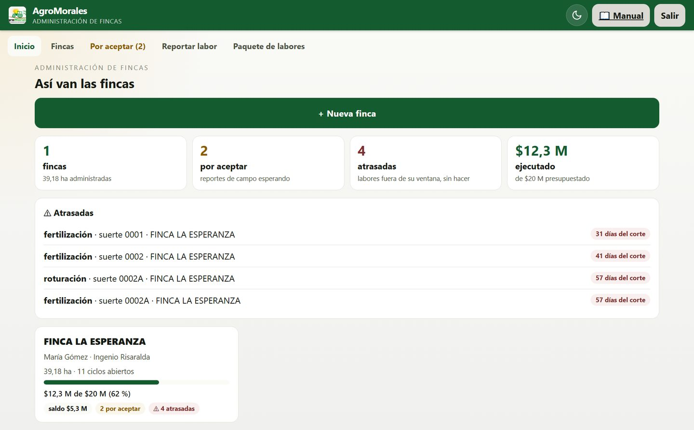
Inicio: 1 finca, 39,18 ha, 2 reportes por aceptar, 4 labores atrasadas y $12,3 M ejecutado de $20 M.
Montar la finca
4Crear la finca y sus suertes
Lo hace administración, una sola vez por finca: Fincas → + Nueva finca.
Nombre, dueño (y su celular de WhatsApp), ingenio, municipio y código de la hacienda en el ingenio.
Cómo cobra ASM la administración: porcentaje sobre los costos o pesos por hectárea al mes (o «por definir»).
Suertes: se traen del maestro del ingenio o se agregan a mano, con su área. El área es el techo: nadie puede reportar más hectáreas de las que tiene la suerte.
La variedad de cada suerte importa: cambia la ventana de la fertilización (punto 11).
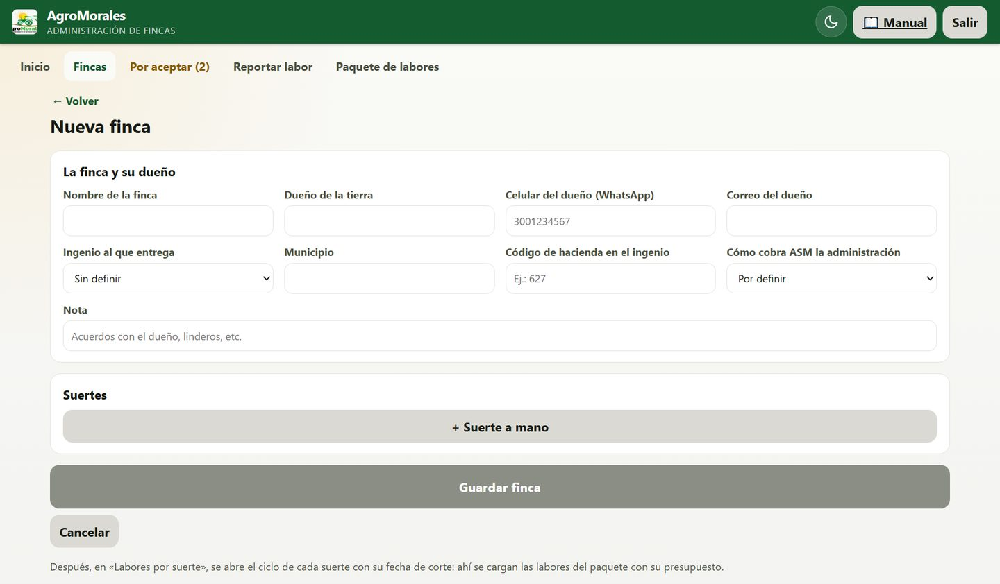
Nueva finca: datos del dueño, cómo cobra ASM y las suertes.
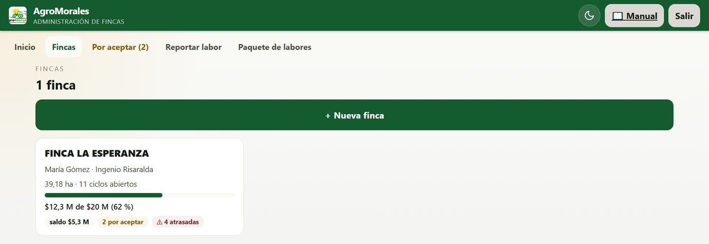
Cada finca queda como una tarjeta con su avance, su saldo y lo pendiente.
5El catálogo de labores
Es la plantilla con la que nace cada corte: qué labores lleva la caña, para soca, plantilla o ambas; cuánto cuestan por hectárea y en qué ventana de días después del corte (DDC) deben hacerse. Se abre en la pestaña Catálogo de labores (solo administración).
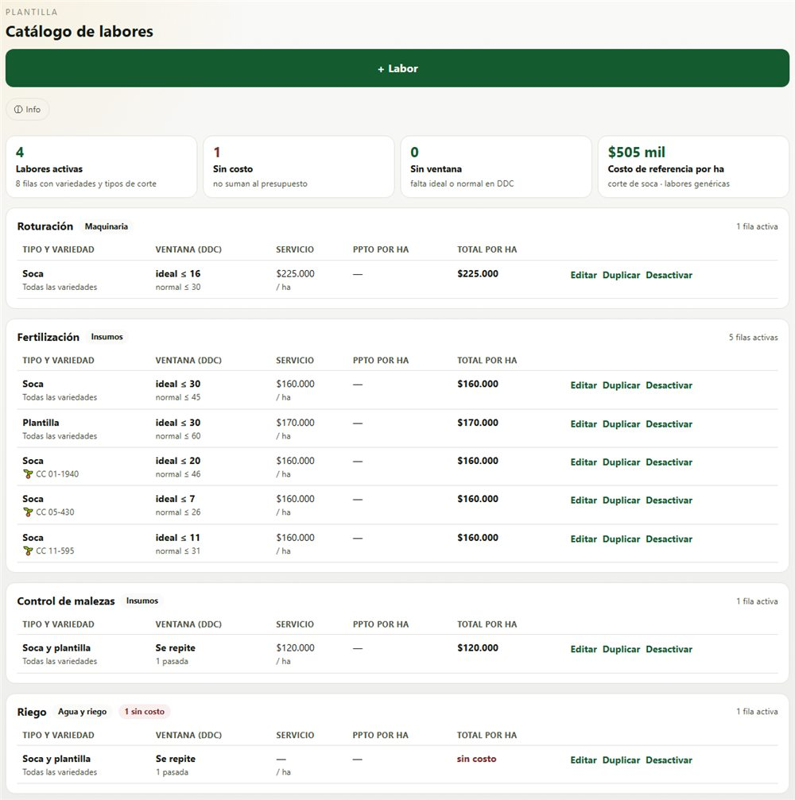
Catálogo de labores: una tarjeta por labor, con una fila por tipo de corte y por variedad.
Cada labor es una tarjeta con su rubro del gremio (maquinaria, insumos, agua) y, debajo, una fila por tipo de corte y por variedad. La fila de una variedad manda sobre la general para las suertes de esa variedad.
Cada fila muestra la ventana (ideal: hasta ese día va a tiempo; normal: hasta ese día todavía es aceptable), el servicio (la tarifa que se cobra al aceptar el reporte), el Ppto por ha (lo que se presupuesta aparte por hectárea: insumos, agua o mano de obra) y el Total por ha, que es cantidad × pasadas × (servicio + Ppto por ha).
Arriba hay cuatro indicadores: labores activas, filas sin costo, filas sin ventana y el costo de referencia por hectárea de un corte de soca.
+ Labor crea una; Editar la cambia; Duplicar copia una fila para crear, por ejemplo, la de otra variedad; Desactivar la saca de los cortes nuevos sin borrarla.
Ponga los costos ANTES de iniciar el primer corte. Una labor sin costo no suma al presupuesto ni carga plata al aceptarse. Cambiar el catálogo después no cambia lo ya planeado en los cortes en curso (eso se ajusta en la finca, labor por labor).
6La ficha de la finca y el mapa
Al tocar la finca se abre su ficha: el resumen (suertes, hectáreas, edad promedio de la caña, labores del mes) y el mapa.
Cada suerte se dibuja con su número. El mapa se pinta por Última labor, por Edad de la caña, por una labor (hecha, a medias o sin hacer) o en Solo bordes, que deja ver el índice satelital. Tocando una suerte sale su ficha.
El selector 🛰 muestra las imágenes del satélite: foto reciente, vigor, humedad, nitrógeno y radar, con su histórico. Vea la guía Imágenes satelitales de su finca.
Los polígonos de las suertes se cargan con un archivo KML (debajo del mapa).
Arriba: Enviar resumen al dueño (un resumen por WhatsApp) y Editar finca y suertes.
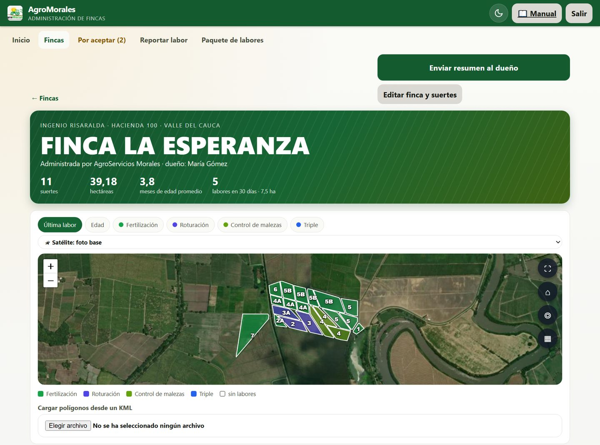
La ficha: 11 suertes, 39,18 ha, 3,8 meses de edad promedio, y el mapa por última labor.
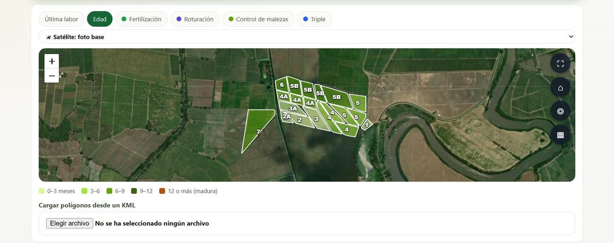
El mismo mapa pintado por edad: de verde claro (recién cortada) a café (madura).
7Iniciar el corte: el asistente
En la ficha, pestaña Labores por suerte, cada suerte tiene su botón Iniciar corte (o Registrar nuevo corte, si ya tiene uno). Abre un asistente de cuatro pasos y no se guarda nada hasta el último.
Parámetros: la fecha del corte (no puede ser futura) y si es soca o plantilla. Se ven el área y la variedad de la suerte.
Punto de partida: de dónde salen los costos: el catálogo, el corte anterior de esa suerte u otra suerte de la finca. Copiar solo trae costos y pasadas; las labores y sus ventanas salen siempre del catálogo y de la variedad de la suerte.
Ajustar costos: una fila por labor, con su cantidad (el área de la suerte), el servicio, el Ppto por ha y, si se repite, las pasadas. El total de cada una es cantidad × pasadas × (servicio + Ppto por ha); abajo queda el presupuesto del corte.
Revisar y activar: presupuesto, costo por hectárea, la parte de servicio de ASM y la de insumos y otros costos, el cronograma y un aviso si alguna labor quedó sin costo. Activar corte abre el corte con ese presupuesto.
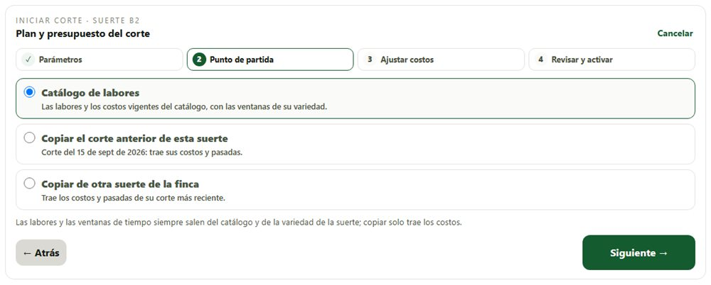
Paso 2: el presupuesto puede partir del catálogo, del corte anterior o de otra suerte de la finca.
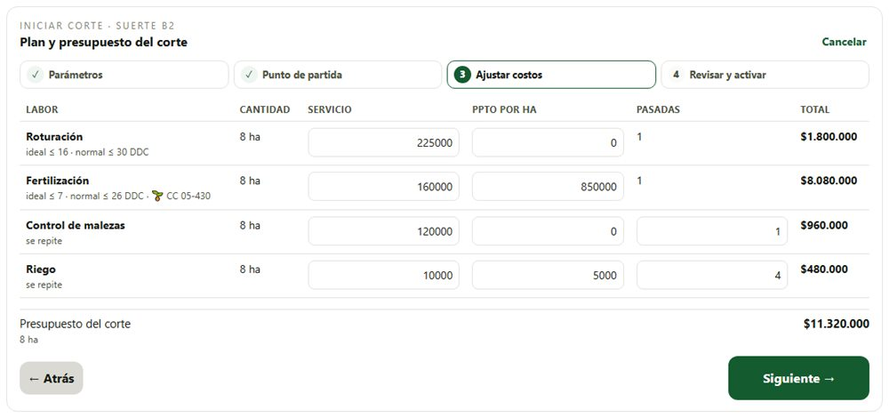
Paso 3: cada costo se puede ajustar antes de activar; el total se recalcula al escribir.
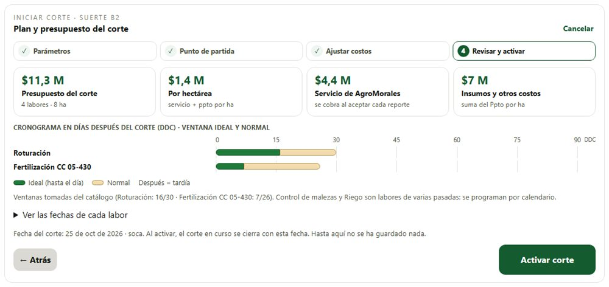
Paso 4: el presupuesto y el cronograma, con la ventana ideal (verde) y la normal (arena) de cada labor y variedad.
En el cronograma, después de la barra arena la labor es tardía. Las labores de varias pasadas (riego, malezas) no llevan ventana: se programan por calendario.
Si la suerte ya tenía un corte en curso, ese corte se cierra con la fecha del nuevo.
El botón atrás del celular regresa un paso (del 4 al 3, al 2 y al 1) y, desde el primero, cierra el asistente sin guardar nada.
Ya con el corte iniciado, cada labor muestra su avance (lo aceptado de lo planeado), su presupuesto, si va a tiempo y su estado. Una labor se ajusta con Presupuesto o se Anula (con motivo).
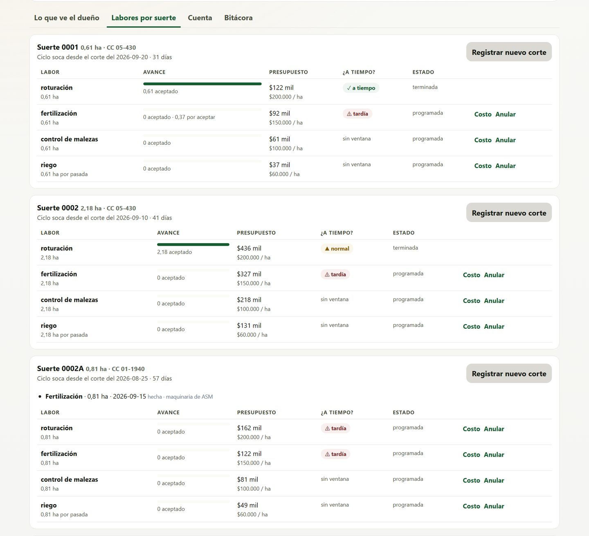
Tres suertes: una al día, una con la fertilización atrasándose y otra con todo tardío.
8El tablero «Plan y avance»
En la ficha, pestaña Plan y avance. Responde una sola pregunta: ¿el corte va como se presupuestó? Lo ven administración y el dueño de la tierra; el dueño no ve el aviso sobre cómo se registran los gastos.
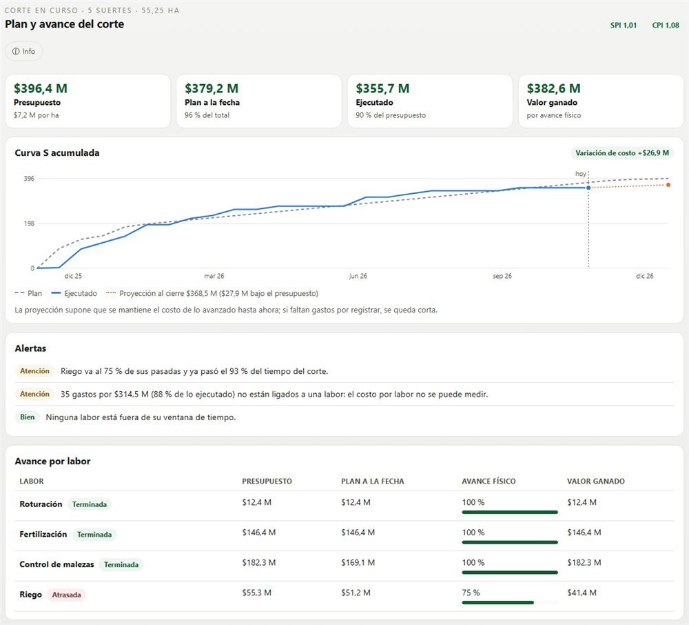
Plan y avance de una finca de ejemplo: $396,4 M presupuestados, $355,7 M ejecutados y el riego atrasado.
Cifra
Qué es
Presupuesto
Lo aprobado para el corte: cantidad × pasadas × (servicio + Ppto por ha) de todas las labores, sin las anuladas.
Plan a la fecha
Cuánto del presupuesto debería llevarse hoy. Cada labor se reparte en línea recta desde el corte hasta su fecha ideal; el riego y las malezas, a lo largo de un año.
Ejecutado
Todo lo gastado de la finca en este corte. Es el mismo número de la pestaña Cuenta.
Valor ganado
Lo que valía lo ya avanzado: el presupuesto de cada labor por su avance físico (lo aceptado sobre lo presupuestado).
Variación de costo
Valor ganado menos ejecutado. Si es positiva, se gastó menos de lo que valía lo avanzado.
SPI
Valor ganado ÷ plan a la fecha. Menos de 1: el avance va por debajo del plan.
CPI
Valor ganado ÷ ejecutado. Menos de 1: se está gastando más de lo que vale lo avanzado.
Semáforo de SPI y CPI:0,95 o más va bien, 0,90 a 0,95 pide atención y menos de 0,90 es urgente. Es un criterio de ASM, no una norma.
Curva S: la línea gris punteada es el plan acumulado, la azul lo ejecutado y la naranja punteada la proyección al cierre, que supone que se mantiene el costo de lo avanzado hasta ahora. Si faltan gastos por registrar, se queda corta.
Alertas: en rojo, una labor con la ventana vencida y sin hacer, o lo ejecutado por encima del presupuesto; en ámbar, una labor de varias pasadas rezagada frente al tiempo del corte (por ejemplo, el riego al 75 % con el 93 % del tiempo).
Avance por labor: presupuesto, plan a la fecha, avance físico y valor ganado de cada labor, con su estado: terminada, en curso o atrasada.
El gasto se mide por finca, no por labor. Los gastos que entran al aceptar un reporte quedan ligados a su labor; los que se registran a mano en la Cuenta se asocian a la suerte. Suman al ejecutado, pero no se pueden atribuir a una labor: si son más de la cuarta parte de lo gastado, administración ve un aviso que lo dice.
El día a día
9Reportar una labor
Lo hace el supervisor en el campo, el mismo día. Pestaña Reportar labor:
Finca, suerte y labor (dice cuánto falta).
Cantidad hecha y el día en que se hizo.
Foto (opcional por ahora: se toma o se escoge de la galería) y una nota si hace falta.
Enviar reporte. Queda por aceptar: todavía no cuenta.
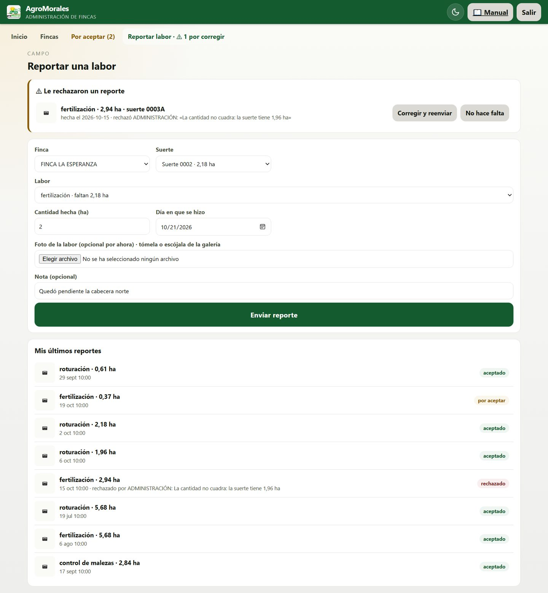
Reportar: arriba, un reporte que le rechazaron para corregir; abajo, sus últimos reportes y en qué van.
Sin señal también se reporta: queda guardado en el celular con su foto y sale solo cuando vuelve la señal (abajo aparece «⏳ Esperando señal»). No lo vuelva a registrar: el reintento no lo duplica.
Si se lo rechazan: aparece arriba con el motivo y el botón Corregir y reenviar, que llena el formulario otra vez.
La hora la pone el servidor. La ubicación está apagada por ahora: se puede reportar aunque no se esté en la finca.
10Aceptar o rechazar
Lo hace otra persona: administración u otro supervisor, nunca quien reportó. Pestaña Por aceptar.
Cada reporte muestra la labor, la cantidad, la suerte, los días desde el corte, quién lo reportó, cuándo llegó y cuánto se carga a la cuenta del dueño al aceptarlo.
Aceptar pide confirmación (es definitivo): suma el avance y crea el gasto una sola vez.
Rechazar… pide el motivo («la cantidad no cuadra», «la foto es de otra suerte»). No borra nada: quien reportó lo ve y lo corrige.
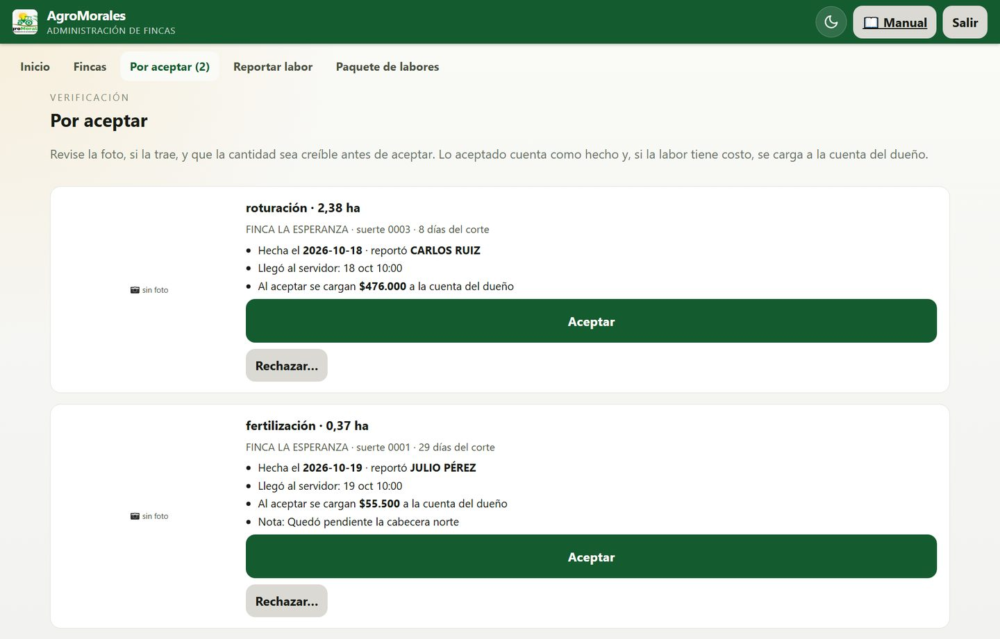
Dos reportes esperando: al aceptar el primero se cargan $476.000 a la cuenta de la dueña.
Antes de aceptar, mire dos cosas: que la foto, si la trae, sea de esa labor y de esa suerte, y que la cantidad sea creíble para ese día. Cuando lo aceptado llega al 98 % de lo planeado, la labor queda terminada sola.
11¿A tiempo? Las ventanas
Se cuentan los días desde el corte hasta el primer reporte aceptado (o hasta hoy, si no se ha hecho). La app lo calcula sola: ✓ a tiempo dentro de la ventana ideal, ▲ normal hasta el límite normal, ⚠ tardía después. Las tardías sin hacer salen en el Inicio como atrasadas.
Labor
✓ A tiempo
▲ Normal
⚠ Tardía
Roturación (soca)
hasta 16 días
17 a 30
más de 30
Fertilización (soca)
hasta 30 días
31 a 45
más de 45
Fertilización (plantilla)
hasta 30 días
31 a 60
más de 60
Fertilización · CC 01-1940
hasta 20 días
21 a 46
más de 46
Fertilización · CC 05-430
hasta 7 días
8 a 26
más de 26
Fertilización · CC 11-595
hasta 11 días
12 a 31
más de 31
Control de malezas, riego
sin ventana: la app no inventa una
Las ventanas vienen del catálogo de labores (punto 5) y siguen las curvas de Cenicaña. Si la suerte no tiene variedad, se usa la ventana general.
12La cuenta del dueño
En la ficha, pestaña Cuenta. Arriba: anticipos, gastos con soporte, honorarios y el saldo.
Anticipo del dueño (entra): cuando el dueño gira plata. El soporte es opcional (la foto de la consignación).
Gasto (sale): los de las labores entran solos al aceptar el reporte. A mano solo se registran los demás (compras, fletes…), y siempre con su soporte: factura o remisión.
Honorario: lo que cobra ASM por administrar. Por ahora se registra a mano.
Saldo = anticipos − gastos − honorarios. Si es negativo sale en rojo como «saldo por girar».
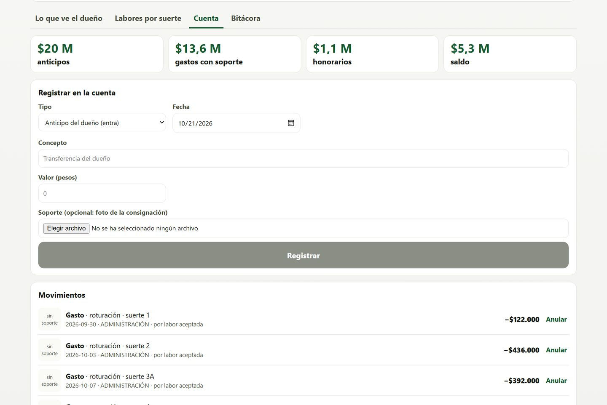
La cuenta: $20 M de anticipos, $13,6 M en gastos con soporte, $1,1 M de honorarios y $5,3 M de saldo.
Un movimiento no se edita ni se borra. Si hubo un error se toca Anular y se escribe el motivo: queda tachado, con quién lo anuló y por qué, y el dueño también lo ve. Después se registra bien.
13La bitácora
Todo lo que pasó en la finca, en orden: cada reporte (por aceptar, aceptado o rechazado, con su motivo) y cada movimiento de plata. Nada se borra; lo anulado aparece como anulado.
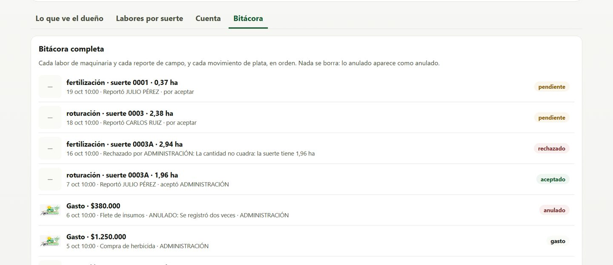
La bitácora: reportes y movimientos con su estado.
El dueño de la tierra
14Lo que ve el dueño
La primera pestaña de la ficha, Lo que ve el dueño, es exactamente lo que él ve: no es un informe preparado, son las mismas cifras de ASM, en vivo.
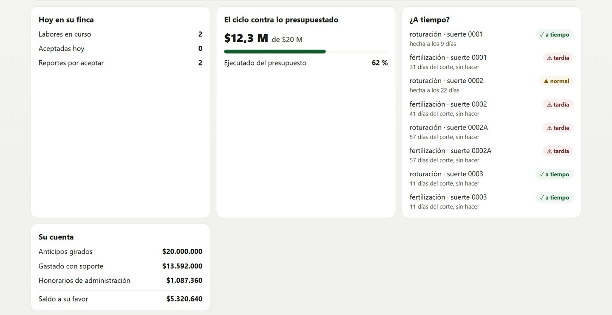
Hoy en su finca, el corte en curso contra lo presupuestado, ¿a tiempo? labor por labor y su cuenta.
15Darle acceso al dueño
En la ficha → Lo que ve el dueño → tarjeta Acceso del dueño. Hay dos caminos y pueden convivir:
Con usuario y PIN (el recomendado): en Más → Usuarios se crea el usuario con el rol «Dueño de finca». Luego, aquí, se escoge y se toca Ligar a esta finca. El dueño entra a la app como cualquiera y ve solo sus fincas. Si tiene varias, se le ligan todas.
Con enlace personal (sin usuario): se escribe para quién es y se toca Crear enlace. El enlace se muestra una sola vez: envíelo de inmediato por WhatsApp. Abajo se ve cuántas veces lo ha abierto y cuándo.
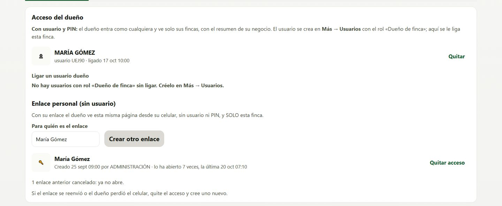
La dueña ligada con su usuario, y un enlace personal que ha abierto 7 veces.
Si el enlace se reenvió o el dueño perdió el celular:Quitar acceso (deja de abrir de inmediato) y se crea uno nuevo. Con usuario, basta con quitarle la finca o desactivar el usuario.
16El dueño en su celular
Al entrar ve su negocio: cuántas fincas, hectáreas, edad de la caña, labores atrasadas, reportes por aceptar y el saldo de su cuenta. Debajo, cada finca con su mapa, satélite, labores, cuenta y bitácora.
📲 Deje su finca en el celular: la instala como una app, con su ícono.
🔔 Avisos: si los activa, le llega una notificación cada vez que se termina una labor en su finca, aunque no tenga la app abierta. «Probar aviso» le manda uno de prueba.
Ve solo sus fincas y no puede cambiar nada: lo decide la base de datos, no la pantalla.
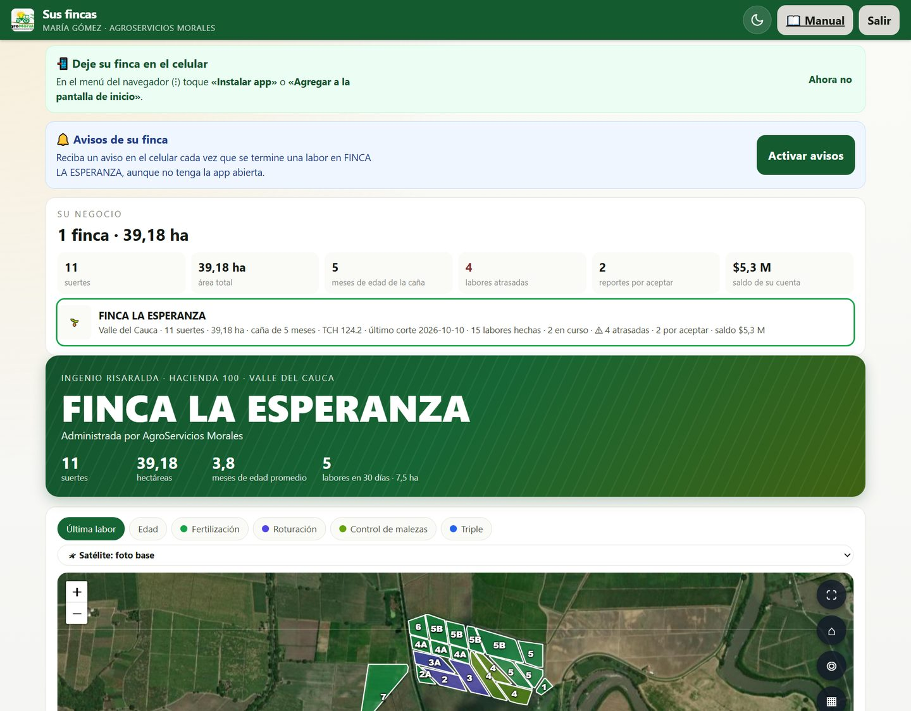
Lo que ve la dueña al entrar: su negocio, su finca y el mapa.
Lo que la app no deja hacer (y por qué)
Estas reglas las hace cumplir la base de datos: aunque la pantalla tuviera un error, igual no pasan.
No se puede
Por qué
Aceptar un reporte propio
Siempre revisa otra persona: nadie se aprueba a sí mismo.
Reportar más hectáreas de las que tiene la suerte
El área es el techo (con 2 % de margen).
Poner una fecha futura o anterior al corte
La labor tiene que caber en su corte.
Registrar un gasto a mano sin soporte
El dueño ve la factura de cada peso que sale.
Borrar o editar un movimiento
Se anula con motivo y queda a la vista.
Marcar una labor terminada a mano
Termina sola cuando lo aceptado llega al 98 %. A mano solo se anula, con motivo.
Que un supervisor cree fincas, cambie costos o toque la plata
Eso es solo de administración.
Que el dueño cambie algo o vea otra finca
Su acceso es de solo lectura y solo de sus fincas.
Qué hacer si…
Si…
Haga esto
No hay señal en la finca
Reporte igual: queda guardado y sale solo. No lo repita.
Me rechazaron un reporte
En Reportar labor, arriba, toque «Corregir y reenviar».
Una labor sale «sin ventana»
Esa labor no tiene ventana en el catálogo; administración se la puede poner.
La fertilización sale tardía muy pronto
Revise la variedad de la suerte: cada variedad tiene su ventana.
El presupuesto sale en cero
A las labores del catálogo les falta el costo. Póngalo antes de iniciar el corte, o ajústelo en el paso 3 del asistente; en uno en curso, use «Presupuesto» en cada labor.
Volvieron a cortar una suerte
Labores por suerte → «Registrar nuevo corte»: el asistente cierra el corte en curso con la nueva fecha.
«Activar corte» muestra un mensaje en rojo
Léalo en el mismo asistente: la fecha no puede ser futura y una labor de un solo paso no admite varias pasadas. Corrija y vuelva a tocar «Activar corte»; hasta entonces no se guardó nada.
El tablero avisa de gastos sin labor
Son gastos registrados a mano en la Cuenta: se asocian a la suerte, no a una labor. Suman al ejecutado y no hay nada que corregir.
El tablero sale con SPI o CPI en rojo
Mire la tabla «Avance por labor»: la labor atrasada o con el costo más alto explica la diferencia. El semáforo es una guía, no un veredicto.
El dueño perdió el celular
Quite el enlace y cree uno nuevo, o (con usuario) cámbiele el PIN.
Registré mal un movimiento
Anúlelo con el motivo y regístrelo bien.
Todavía no hace: calcular el honorario solo (se registra a mano) ni la cosecha y la liquidación del ingenio.